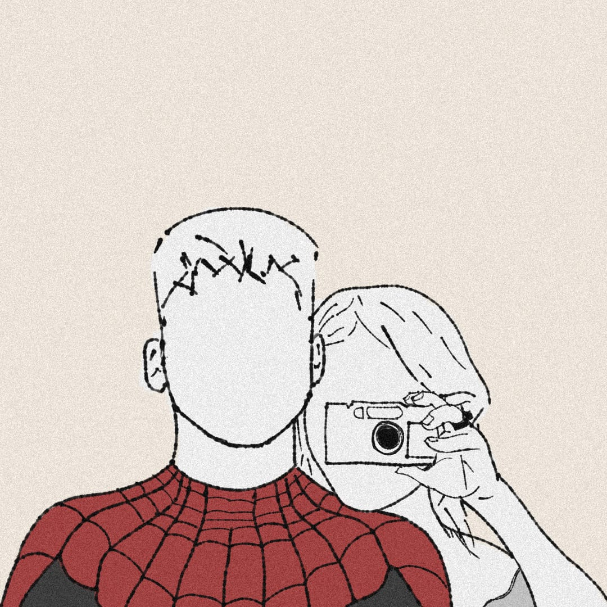

El dibujo fue hecho en la semana de estreno de Spiderman-No Way Home, la vimos juntos el dia del estreno en la ultima función de la noche, ya era super tarde y regresamos a casa cerca de las 3 de la madrugada, dias después apareció un trend en tik tok recreando la foto de Tom Holland con su traje, pero con nuestros rostros, asi que decidí tambien hacer un dibujo con nuestros rostros.